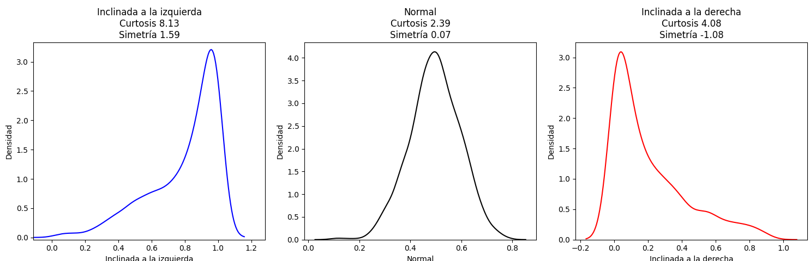

Capítulo 8 Prueba de Bondad de Ajuste
Para esta pueba se usará la función chisq.test del paquete stats que requiere de los siguientes parámetros:
- x: es el vector (o la tabla de contingencia calculada con table) de frecuencias absolutas observadas de las clases en la muestra
- p : es el vector de probabilidades teóricas de las clases para la distribución que queremos contrastar. En caso de NO especificarlo, se asume equiprobabilidad para todas las clases
- simulate.p.value: es un parámetro lógico que indica a la función si debe optar por una simulación para el cálculo del p-valor del contraste. Por defecto es FALSE
Esta herramienta debe tomarse en cuenta cuando falla una o más condiciones al aplicar la prueba de bondad de ajuste, en ese caso se indica como TRUE y R realizará una serie de réplicas aelatorias a partir el método de Monte Carlo test. Este número de réplicas es de 2000 por defecto, pero si se desea otra cantidad, se debe indicar mediante el parámetro B. Consideremos el ejemplo visto en clase:
Ejemplo 1
Un grupo de ratas baja 90 veces por una rampa que conecta con 3 puertas. Se observa que en 23 ocasiones las ratas pasaron por la puerta 1, 36 veces por la puerta 2 y 31 veces por la puerta 3.
Se desea probar que las ratas no tienen preferencias por alguna de las puertas en particular. Use un nivel de significancia e 0.05.
Seguidamente, construimos la tabla resumen
| Puerta 1 | Puerta 2 | Puerta 3 | |
|---|---|---|---|
| Frecuencia observada | 23 | 30 | 36 |
Para realizar esta prueba, se considerarán las siguientes hipótesis:
\(H_0: p_1 = p_2 = p_3 = \frac{1}{3}\), dónde \(p_i\) es la probabilidad de que una rata elija la puerta \(i = 1,2,3\)
\(H_1\): las ratas tienen preferencia por alguna puerta en particular
freq.empiricas <- c(23, 36, 31)
#prob.teoricas <- c(1/3,1/3,1/3)
chisq.test(freq.empiricas)
##
## Chi-squared test for given probabilities
##
## data: freq.empiricas
## X-squared = 2.8667, df = 2, p-value = 0.2385Conclusión
Note que al ser valor \(P > a\)se concluye que no se cuenta con suficiente eivdencia en contra para rechazar \(H_0\) y por tanto, es válido asumir que las ratas no tienen preferencia por alguna de las puertas.
Ejemplo 2
El curso Estructura de Datos II, es impartido en el segundo año de la carrera de Ingeniería en Sistemas de una Universidad. Un profesor considera que las edades de los estudiantes que llevan dicho curso, sigue una distribución normal. En una muestra de 200 estudiantes se obtuvieron los resultados de la tabla adjunta. ¿Considera correcta la afirmación del profesor?.
| Edad: X | Frecuencia observada |
|---|---|
| \(X < 18\) | 30 |
| \(18 \leq X < 19\) | 100 |
| \(19 \leq < 20\) | 50 |
| \(20 \leq X < 21\) | 15 |
| \(X \geq 21\) | 5 |
Tome en cuenta lo siguiente: \(\bar{x} = 18.825\) y \(s = 0.907464855\)
Para realizar esta prueba, se considerarán las siguientes hipótesis:
\(H_0: X \sim N(18.825,0.823492)\) (Los datos de las edades son normales, con media y varianza dadas)
\[ H_1: X \nsim N(18.825,0.823492) \] Seguidamente se resuelve el caso en R
extremos.izquierdos <- c(-Inf, 18, 19, 20, 21)
extremos.derechos <- c(18, 19, 20, 21, Inf)
frecuencias.empiricas <- c(30, 100, 50, 15, 5)
u <- 18.825
sigma <- 0.907464855
probabilidades.teoricas <- pnorm(extremos.derechos, u, sigma) -
pnorm(extremos.izquierdos, u, sigma)
chisq.test(frecuencias.empiricas, p = probabilidades.teoricas)
## Warning in chisq.test(frecuencias.empiricas, p =
probabilidades.teoricas):
## Chi-squared approximation may be incorrect
##
## Chi-squared test for given probabilities
##
## data: frecuencias.empiricas
## X-squared = 17.472, df = 4, p-value = 0.001564Note que aparece un mensaje indicando que la aproximación podría ser incorrecta, ¿A qué se debe esto?
Se calculará seguidamente, las frecuencias teóricas:
n = sum(frecuencias.empiricas)
frecuencias.teoricas <- n*probabilidades.teoricas
frecuencias.teoricas
## [1] 36.328356 78.963603 65.169670 17.884418 1.653953Se puede evidencia que en la última categoría, la frecuencia es menos que 5, incumpliendo la condición necesaria.
Lo anterior se puede resolver de dos maneras: 1. Se pueden fusionar intervalos 1. Se puede usar la opción de simular un p-valor con R
Fusión de intervalos
La tabla, quedaría de la siguiente forma:
| Edad: X | Frecuencia Observada |
|---|---|
| X < 18 | 30 |
| 18 \(\leq\) X < 19 | 100 |
| 19 \(\leq\) X < 20 | 50 |
| Edad: X | Frecuencia Observada |
|---|---|
| X \(\geq\) 20 | 20 |
extremos.izquierdos2 <- c(-Inf, 18, 19, 20)
extremos.derechos2 <- c(18, 19, 20, Inf)
frecuencias.empiricas2 <- c(30, 100, 50, 20)
u <- 18.825
sigma <- 0.907464855
probabilidades.teoricas2 <- pnorm(extremos.derechos2, u, sigma) -
pnorm(extremos.izquierdos2, u, sigma)
chisq.test(frecuencias.empiricas2, p = probabilidades.teoricas2)
##
## Chi-squared test for given probabilities
##
## data: frecuencias.empiricas2
## X-squared = 10.249, df = 3, p-value = 0.01657Con esto se logra resolver el problema, concluyendo que se encuentra suficiente evidencia para rechazar \(H_0\)
Simulando p-valor
chisq.test(frecuencias.empiricas, p = probabilidades.teoricas,
simulate.p.value = TRUE, B=2000)
##
## Chi-squared test for given probabilities with simulated p-value
(based
## on 2000 replicates)
##
## data: frecuencias.empiricas
## X-squared = 17.472, df = NA, p-value = 0.003998Note que se obtiene un 𝑃- valor distinto, pero se coincide en la conclusión.
Conclusión
Se encuentra suficiente evidencia para rechazar \(H_0\), por lo que no se puede asumir normalidad para las edades de los estudiantes del curso Estructuras de Datos II.
Dentro de este segmento de Bondad de ajuste, cobra un especial interés las pruebas de normalidad, esto por cuanto si una persona desea usar pruebas paramétricas, debe primero verificar que se cumplen las condiciones de normalidad para tal fin.
El enfoque de pruebas de normalidad se puede abordar desde 3 dimensiones:
- Visualización de datos mediante Histogarmas o QQ-Plot
- Pruebas formales de Normalidad
- Evaluar simetría (skewness) y la curtosis (kurtosis)
8.1 Visualización de datos
Para mostrar esta técnica se usarán datos de la tabla Iris, específicamente
Sepal.with.
muestra <- iris$Sepal.Width
par(mfrow = c(1, 2)) # crea un matriz de tamaño 1x2 para imprimir dos gráficos de manera simultánea
hist(muestra, main="Histograma de muestra")
plot(density(muestra), main="Estimación de la densidad")
De entrada, pareciera que la curva de densidad adopta una forma similar a la campana de Gauss, por lo que podría ser válida la siguiente comparación:
plot(density(muestra), main = "Estimación de la densidad")
# Se generan valores para estimar la distribución normal de media y desviación estáandar igual a los datos de la muerta de iris
x <- seq(from = 1,to = 5, by = 0.01)
u <- mean(iris$Sepal.Width)
sigma <- sd(iris$Sepal.Width)
lines(x, dnorm(x, mean = u, sd = sigma), col = "red")
Se observa en la imagen que ambas curvas son muy similares, pero ¿será ese parecido suficiente para garantizar normalidad? En la siguiente sección se estudiarán otras técnicas.
Para ampliar el tema de la curva de densidad Curva de densidad|Khan Academy
Otro tipo de gráfico que permite estudiar la normalidad de los datos es el QQ-plot, conocido como el cuantil-cuantil
La función u objetivo de este gráfico es comparar los cuantiles observados en la muestra con los cuantiles teóricos de la distribución teórica. Para entender con más detalle la forma en que se construyen este tipo de gráficos, se recomienda ver el siguiente vídeo: QQ-plots
La sintaxis para crear un QQ-plot es la siguiente:
donde:
- x: vector que contiene a la muestra de datos
- distribution: nombre de la familia de distribuciones, la cuál, debe escribirse entre comillas: “norm”,“binom”, “poisson”, “t”, etc.
- El QQ-plot agrega varias opciones que se pueden ocultar:
- Ocultar los QQ-puntos con ordenadas más extremas:
id = FALSE - Rejilla del gráfico:
grid = FALSE - Línea recta que une los QQ-puntos del primer y tercer cuartil, conocida como recta cuartil-cuartil. Se puede ocultar con
line = "none" - Curvas discontinuas que abrazan una región de confianza de 95%. Se puede ocultar con
envelope = FALSE - Se pueden usar los parámetros usuales de
plotpara poner nombres a los ejes, título, modificar el estilo de los puntos, etc., y otros parámetros específicos para modificar el aspecto del gráfico. Por ejemplo,col.linessirve para especificar el color de las líneas que añade.
- Ocultar los QQ-puntos con ordenadas más extremas:
Seguidamente se muestra el QQ-plot para el ejemplo anterior:
## Loading required package: carData##
## Attaching package: 'car'## The following object is masked from 'package:dplyr':
##
## recode## The following object is masked from 'package:purrr':
##
## some## The following object is masked from 'package:EnvStats':
##
## qqPlot# Calcular la media y la desviación estándar de Sepal.Width
u <- mean(iris$Sepal.Width)
sigma <- sd(iris$Sepal.Width)
# Crear el QQ-plot
qqPlot(iris$Sepal.Width, distribution = "norm", mean = u, sd = sigma)
## [1] 16 34En este caso, miesntras más se ajusten los puntos a la recta, mejor es el ajuste de normalidad de los datos. Para el ejemplo anterior, se nota que la mayoria de los puntos quedaron dentro de la región del IC de 95%, lo cuál es un buen indicador de normalidad.
8.2 Pruebas formales de normalidad
En esta sección se estudiarán 4 pruebas que pueden ser de utilidad al estudiar la normalidad de los datos.
8.2.1 Test de Kolmogorov-Smirnov-Lilliefors o K-S-L test
Basada en el paquete nortest
lillie.test(muestra)
##
## Lilliefors (Kolmogorov-Smirnov) normality test
##
## data: muestra
## D = 0.10566, p-value = 0.0003142Note que en este caso la muestra detecta que sí hay suficiente evidencia en contra para no aceptar normalidad en los datos, algo que gráficamente parecía tener esa condición.
El test K-S-L tiene un inconveniente: aunque es muy sensible a las diferencias entre la muestra y la distribución teórica alrededor de sus valores medios, le cuesta detectar diferencias prominentes en un extremo u otro de la distribución.
Su potencia se ve afectada por dicho inconveniente.
Veamos un ejemplo de este hecho intentando ver si una muestra de una distribución t de Student nos acepta que es normal o no:
set.seed(100)
x <- rt(50,3) #se generan 50 datos aleatorio de una distribución t con 3
gl
lillie.test(x)
##
## Lilliefors (Kolmogorov-Smirnov) normality test
##
## data: x
## D = 0.10332, p-value = 0.2013Nos dice que no podemos rechazar que la muestra x sea normal.
Esto es debido a que la función de densidad de la distribución \(t\) de Student es algo más aplanada que la distribución normal, donde en los dos extremos está por encima de la de la normal. Como el test K-S-L no detecta las diferencias en los extremos, acepta que x es normal.
8.2.2 Test de normalidad de Anderson-Darling o A-D test
El test de normalidad de Anderson-Darling resuelve el inconveniente del test de K-S-L y se está implementado en el paquete nortest. Note que al aplicar esta prueba al caso anterior con los valores generados de una distrubucón t, la noramlidad queda rechazada.
Ahora se le aplicará la prueba a la muestra de Iris
ad.test(muestra)
##
## Anderson-Darling normality test
##
## data: muestra
## A = 0.90796, p-value = 0.02023Donde el resulta indica por su p-valor, que no se debe aceptar normalidad de los datos.
8.2.3 Test de Shapiro-Wilks o S-W test
Un inconveniente común a los tests K-S-L y A-D es que, si bien pueden usarse con muestras pequeñas (pongamos de más de 5 elementos), se comportan mal con muestras grandes, de varios miles de elementos.
En muestras de este tamaño, cualquier pequeña divergencia de la normalidad se magnifica y en estos dos tests aumenta la probabilidad de errores de tipo I.
Un test que viene a resolver el problema es Shapiro-Wilk que se encuentra por
defecto en R.
Se aplica la prueba a los dos casos trabajados anteriormente:
shapiro.test(muestra)
##
## Shapiro-Wilk normality test
##
## data: muestra
## W = 0.98492, p-value = 0.1012Note que en este caso no se encontró evidencia en contra para asumir normalidad, cosa que no ocurrió con las otras pruebas y posiblemente por una razón, esta muestra consta de 150 datos, un tamaño grande para las pruebas anteriores de K-S-L y A-D.
El el otro caso donde se simularon datos de una distribución t-student, se concluye que la normalidad para los datos no es una condición válida de asumir, claro está que los datos provienen de una distribución t-student.
Si nuestra muestra de valores tiene empates, los p-valores de los contrastes calculados a partir de las distribuciones de los estadísticos usados en los tests K-S-L, A-D y S-W se pueden ver afectados hasta el punto de que, si hay muchos empates, su significado no tenga ningún sentido.
Hay que decir que el menos afectado por los empates es el test de S-W.
8.2.4 Test omnibus de D’Agostino-Pearson
Un test que no es sensible a los empates es el test de normalidad de D’Agostino Pearson.
Este test se encuentra implementado en la función dagoTest del paquete fBasics, y lo
que hace es cuantificar los diferentes que son la asimetría y la curtosis de la muestra
(dos parámetros estadísticos relacionados con la forma de la gráfica de la función de
densidad muestral) respecto de los esperados en una distribución normal, y resume
esta discrepancia en un p-valor con el significado usual.
No debe darse mucha relevancia a los datos de STATISTIC en este caso, pues esto difieren, como se verá más adelante, de los valores de curtosis y simetría dados por otras funciones de R, posiblemente porque los valores dados no corresponden específicamente a valores en las distribuciones donde se realizan los tres tests: chi cuadrado, simetría y curtosis. Se priorizará el valor P de cada prueba.
Para poder aplicar dicho test, el tamaño de la muestra debe ser 20 como mínimo.
dagoTest(x)
##
## Title:
## D'Agostino Normality Test
##
## Test Results:
## STATISTIC:
## Chi2 | Omnibus: 21.8125
## Z3 | Skewness: 2.8069
## Z4 | Kurtosis: 3.7328
## P VALUE:
## Omnibus Test: 1.834e-05
## Skewness Test: 0.005001
## Kurtosis Test: 0.0001894Vemos que según el test de D’Agostino-Pearson, la muestra x correspondiente a la distribución t de Student no sigue una distribución normal, pues todos los valores P están por debajo de 0.05.
dagoTest(muestra)
##
## Title:
## D'Agostino Normality Test
##
## Test Results:
## STATISTIC:
## Chi2 | Omnibus: 3.1238
## Z3 | Skewness: 1.616
## Z4 | Kurtosis: 0.7157
## P VALUE:
## Omnibus Test: 0.2097
## Skewness Test: 0.1061
## Kurtosis Test: 0.4742En este caso admite normalidad para los datos.
Si se desea calcular la curtosis y la simetría, se pueden usar las siguiente funciones del
paquete moments:
curtosis <- kurtosis(x)
simetria <- skewness(x)
plot (density(x), main = "Normal",
xlab = paste("Curtosis ", round(curtosis, 2), "\n",
"Simetría ", round(simetria,2)))
curtosis <- kurtosis(muestra)
simetria <- skewness(muestra)
plot (density(muestra), main = "Normal",
xlab = paste("Curtosis ", round(curtosis, 2), "\n",
"Simetría ", round(simetria,2)))
Para interpretaciones, considere lo siguiente: **Simetría hace referencia a la distancia de la media al menor valor en la proporción a la distancia de la media al valor mayor.
Simetría hace referencia a la distancia de la media al menor valor en proporción a la distancia de la media al valor mayor.
- Si el valor de la simetría se acerca a 0, indica que la distribución es simétrica, es decir ambos valores extremos están aproximadamente a la misma distancia de la media.
- Si el valor de la simetría es positivo (S > 0) indica que el valor menor está más cerca de la media que el valor mayor, inclinando la media hacia la izquierda.
- Si el valor de la simetría es negativo (S < 0) indica que el valor mayor está más cerca de la media que el valor menor, inclinando la media hacia la derecha.
Figure 8.1: Simetría en la distribución de los datos
La curtosis indica qué tan pronunciada es la forma de campana en una distribución normal.
- Una curtosis muy alta denota una campana alargada y con las colas muy bajas - Leptocúrtica
- Un valor intermedio denota una campana “ideal” con la punta semicircular y la curva de las colas pronunciada - Mesocúrtica
- Una curtosis muy baja indica una campana chata y ancha con la curva de las colas poco pronunciada - Platicúrtica
En una distribución normal “ideal”, la curtosis tiene un valor cercano a 3.
Figure 8.2: Forma de la curva según el tipo de curtosis
